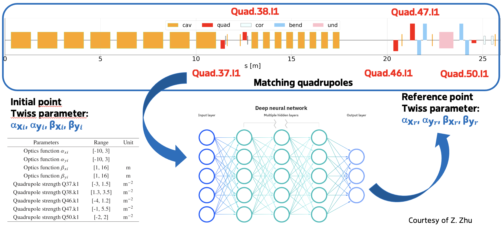
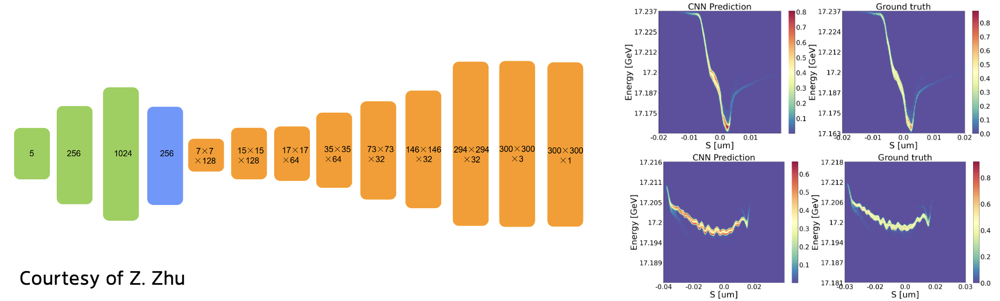

Virtual Diagnostics at EuXFEL
Joint Workshop on Short Pulses, 21.11.2022
Christian Grech, MXL

Outline
- Introduction
- What is a Virtual Diagnostic?
- The EuXFEL data sources
- Recent VD Applications
- Challenges and Future Prospects
Outline
- Introduction
- What is a Virtual Diagnostic?
- The EuXFEL data sources
- Recent VD Applications
- Challenges and Future Prospects
Introduction
- FEL control and tuning requires detailed and on-the-fly insight on the driving electron beam.
- Increasing demands for high intensity and very short pulse duration pose a challenge for the effectiveness, and accuracy of traditional diagnostic methods.
- This requires an update to the current suite of diagnostics.
Outline
- Introduction
- What is a Virtual Diagnostic?
- The EuXFEL data sources
- Recent VD Applications
- Challenges and Future Prospects
What is a Virtual Diagnostic?

- Computationally expensive
- Fast approximation to simulation
Outline
- Introduction
- What is a Virtual Diagnostic?
- The EuXFEL data sources
- Recent VD Applications
- Challenges and Future Prospects
The EuXFEL data sources
- DOOCS control system
- Python and MATLAB interfaces allow live data and history capture.
- DOOCS/Karabo DAQ datastreams
- Collection of channels can be synchronously acquired into a RAW/HDF5 format.
- Machine File Catalog
- Long-term snapshots of machine operation - 30k+ snapshots for the EuXFEL.
Outline
- Introduction
- What is a Virtual Diagnostic?
- The EuXFEL data sources
- Recent VD Applications
- Challenges and Future Prospects
Online Optics Matching at Injection
Z. H. Zhu, S. Tomin, Y. Chen, W. L. Qin, M. Scholz

- Surrogate model based on a deep neural network architecture.
- Model is trained with 190,000 simulation results.
- Tested in the control room and verified with OCELOT simulations and optics measurements.
Machine learning based surrogate model construction for optics matching at the European XFEL. In Proc. IPAC’22, Bangkok, Thailand, MOPOTK013
Longitudinal Phase Space Prediction
Z. H. Zhu, S. Tomin, J. Kaiser

- Beam distribution simulated with ASTRA and OCELOT.
- Three slice beam property distributions are predicted using an ANN. Fast but performance can be enhanced.
- Using a Convolutional Encoder-Decoder, one can obtain better results but with a slower training time.
Application of machine learning in longitudinal phase space prediction at the European XFEL. In Proc. FEL’22, Trieste, Italy, WEP12.
Current, LPS reconstruction based on CRISP data
J. Kaiser, S. Tomin

- Two Artificial Neural Networks are used to reconstruct the current from the RF settings and the THz spectrum.
- A second bunch length predictor allows for the reconstruction to resolve both long and short bunches.
Anomaly Detection in SRF cavities
A. Eichler, J. Branlard, J. H. K. Timm, A. Sulc, T. Wilksen

- A parity space method is implemented, using the generalized likelihood ratio as the residual.
- In contrast to the current quench detection system, different fault types can be distinguished.
- Another method uses LSTMs, detects faults with low false positives/negatives.
Anomaly Detection at the European XFEL using a Parity Space based Method, arXiv.2202.02051 & A Data-Driven Anomaly Detection on SRF cavities at the European XFEL in Proc. IPAC’22, Bangkok, Thailand, TUPOPT062.
Energy Calibration of Bragg crystal setups
C. Grech, G. Geloni, M. Guetg

- A measurement model was created using data from historical scans.
- Lines are detected from spectrometer scans.
- Reflections can be identified using a classifier and the actual photon energy determined.
Machine Learning Applied for the Calibration of the Hard X-Ray Single-Shot Spectrometer at the European XFEL, in Proc. IPAC'22, Bangkok, Thailand, Jun. 2022, TUPOST046.
X-Ray Pulse Property Prediction
C. Grech, F. Jafarinia, G. Geloni, T. Guest, M. Guetg

- Electron beam trajectory is used to predict photon properties as measured at the experimental halls.
- Measurements at the SASE1 beamline have taken place in collaboration with SPB/SFX and data is being analysed.
Outline
- Introduction
- What is a Virtual Diagnostic?
- The EuXFEL data sources
- Recent VD Applications
- Challenges and Future Prospects
Challenges and Future Prospects
- Virtual Diagnostics can be used in regular operations at an accelerator facility.
- Moving from a proof-of-concept towards regular deployment.
- Ease-of-access needs to improve to allow widespread use.
Questions?